<section class="oe_container">
<div class="amp-listing">
<style>
.amp-listing{font-family:-apple-system,'Segoe UI',Roboto,Helvetica,Arial,sans-serif;color:#1e2433;max-width:1120px;margin:0 auto;line-height:1.6;background:#fff}
.amp-listing *{box-sizing:border-box}
.amp-section{padding:56px 24px}
.amp-inner{max-width:1040px;margin:0 auto}
.amp-eyebrow{font-size:12px;font-weight:700;letter-spacing:.06em;text-transform:uppercase;color:#6d28d9;text-align:center;margin:0 0 8px}
.amp-h2{font-size:27px;font-weight:800;text-align:center;letter-spacing:-.01em;margin:0 0 10px;color:#1a1033}
.amp-lead{text-align:center;color:#5b6472;max-width:680px;margin:0 auto 34px;font-size:16px}

/* Hero */
.amp-hero{background:linear-gradient(135deg,#2c1a5e,#5b21b6 60%,#7c3aed);border-radius:22px;padding:52px 40px;color:#fff}
.amp-hero-grid{display:flex;gap:36px;align-items:center;flex-wrap:wrap}
.amp-hero-copy{flex:1 1 420px}
.amp-hero h1{font-size:36px;margin:0 0 10px;font-weight:800;letter-spacing:-.02em}
.amp-hero-sub{font-size:18px;margin:0 0 18px;opacity:.92;font-weight:500;color:#e9d8fd}
.amp-hero p.amp-hero-desc{font-size:15px;line-height:1.65;opacity:.9;margin:0 0 20px;max-width:520px}
.amp-badges{display:flex;flex-wrap:wrap;gap:8px}
.amp-badge{display:inline-block;padding:7px 14px;border-radius:999px;background:rgba(255,255,255,.14);border:1px solid rgba(255,255,255,.25);font-weight:600;font-size:13px}
.amp-hero-img{flex:1 1 380px;text-align:center}
.amp-hero-img img{max-width:100%;border-radius:14px;box-shadow:0 18px 40px rgba(0,0,0,.35)}

/* Feature pill overview grid */
.amp-pill-group{margin-bottom:30px}
.amp-pill-group h3{font-size:12px;font-weight:800;color:#6d28d9;text-transform:uppercase;letter-spacing:.05em;margin:0 0 12px;padding-left:2px}
.amp-pill-grid{display:flex;flex-wrap:wrap;gap:10px}
.amp-pill{flex:1 1 200px;background:#fff;border:1px solid #ece7fb;border-radius:12px;padding:14px 16px;font-size:13.5px;font-weight:600;color:#2b2545;display:flex;align-items:center;gap:10px;box-shadow:0 1px 3px rgba(45,20,90,.04)}
.amp-pill .amp-ico{font-size:18px;flex:0 0 auto}
.amp-pill-diff{background:#fdf5ff;border-color:#eddcff}

/* Feature deep-dive sections (screenshot + capability list) */
.amp-feat{padding:52px 24px;border-top:1px solid #f0edf9}
.amp-feat-grid{display:flex;gap:32px;align-items:flex-start;flex-wrap:wrap}
.amp-feat-grid.amp-reverse{flex-direction:row-reverse}
.amp-feat-media{flex:1 1 520px;min-width:280px}
.amp-feat-media img{width:100%;border-radius:12px;border:1px solid #e6e1f5;box-shadow:0 8px 24px rgba(30,10,70,.08)}
.amp-feat-caption{font-size:13.5px;color:#6b7280;margin-top:14px;line-height:1.55}
.amp-feat-list{flex:1 1 320px;min-width:260px}
.amp-feat-list h2{font-size:23px;font-weight:800;color:#1a1033;margin:0 0 10px}
.amp-feat-list>p{font-size:14.5px;color:#5b6472;margin:0 0 18px;line-height:1.6}
.amp-cap-box{background:#fff;border-radius:12px;overflow:hidden;border:1px solid #e6e1f5}
.amp-cap{padding:13px 16px;border-bottom:1px solid #f2effa;font-size:14px;color:#332b52;display:flex;align-items:center;gap:10px}
.amp-cap:last-child{border-bottom:none}
.amp-cap b{font-weight:700;color:#1a1033}
.amp-cap .amp-tick{color:#7c3aed;font-weight:800;flex:0 0 auto}

/* Page tour */
.amp-page-tag{display:inline-block;background:#ede4ff;color:#5b21b6;font-size:11.5px;font-weight:800;text-transform:uppercase;letter-spacing:.04em;padding:4px 10px;border-radius:999px;margin-bottom:10px}

/* Annotation list (minimal: dashed line + arrow + label) — used on the 3 upgraded sections */
.amp-annot-list{margin-top:6px}
.amp-annot{display:flex;align-items:center;gap:10px;padding:9px 0}
.amp-annot-rule{flex:0 0 40px;height:0;border-top:1px dashed #c9bdea}
.amp-annot-arrow{color:#7c3aed;font-size:15px;flex:0 0 auto}
.amp-annot-label{font-size:15px;font-weight:700;color:#2b2545}

/* Checkmark chip grid — used on Model Permissions */
.amp-check-grid{display:flex;flex-wrap:wrap;gap:9px;margin-top:6px}
.amp-check{display:inline-flex;align-items:center;gap:7px;background:#f7f4ff;border-radius:10px;padding:9px 13px;font-size:14px;font-weight:700;color:#332b52}
.amp-check .amp-tick{color:#22c55e;font-weight:900}

/* Differentiators */
.amp-diff-band{background:#1a1033;border-radius:20px;padding:44px 36px}
.amp-diff-band .amp-eyebrow{color:#c4a6ff}
.amp-diff-band .amp-h2{color:#fff}
.amp-diff-band .amp-lead{color:#c9c2e0}
.amp-diff-grid{display:flex;flex-wrap:wrap;gap:14px}
.amp-diff-card{flex:1 1 230px;background:rgba(255,255,255,.06);border:1px solid rgba(196,166,255,.3);border-radius:14px;padding:18px}
.amp-diff-card .amp-ico{font-size:22px;display:block;margin-bottom:8px}
.amp-diff-card h4{margin:0 0 4px;font-size:14.5px;font-weight:700;color:#fff}
.amp-diff-card p{margin:0;font-size:12.5px;color:#b9b0d6;line-height:1.5}

/* Benefits */
.amp-benefit-grid{display:flex;flex-wrap:wrap;gap:28px}
.amp-benefit-col{flex:1 1 380px}
.amp-benefit{display:flex;gap:12px;margin-bottom:16px;font-size:14.5px;color:#332b52;line-height:1.55}
.amp-benefit .amp-tick{color:#7c3aed;font-weight:800;flex:0 0 auto}

/* Reviews */
.amp-review-grid{display:flex;flex-wrap:wrap;gap:18px}
.amp-review-card{flex:1 1 300px;background:#fff;border:1px solid #ece7fb;border-radius:14px;padding:22px;box-shadow:0 1px 4px rgba(45,20,90,.05)}
.amp-stars{color:#f59e0b;font-size:14px;letter-spacing:2px;margin-bottom:10px}
.amp-review-card h4{margin:0 0 8px;font-size:15.5px;font-weight:800;color:#1a1033}
.amp-review-quote{font-size:14px;color:#5b6472;line-height:1.6;margin:0 0 16px}
.amp-review-who{border-top:1px solid #f2effa;padding-top:12px}
.amp-review-org{font-size:13.5px;font-weight:700;color:#5b21b6;display:block}
.amp-review-sector{font-size:12.5px;color:#9a94ab}

/* CTA / support */
.amp-cta{background:linear-gradient(135deg,#2c1a5e,#6d28d9);border-radius:20px;padding:44px;text-align:center;color:#fff}
.amp-cta h2{color:#fff;font-size:26px;margin:0 0 8px;font-weight:800}
.amp-cta p{opacity:.9;margin:0 0 22px;font-size:15px}
.amp-btn-row a{display:inline-block;padding:12px 26px;border-radius:10px;text-decoration:none;font-weight:700;font-size:14.5px;margin:0 6px 10px}
.amp-btn-primary{background:#fff;color:#4c1d95}
.amp-btn-ghost{background:rgba(255,255,255,.12);color:#fff;border:1px solid rgba(255,255,255,.4)}
.amp-cta .amp-email{font-size:13px;opacity:.75;margin-top:14px}

.amp-notice{background:#fff7ed;border:1px solid #fed7aa;border-radius:14px;padding:20px 24px;font-size:13.5px;color:#9a3412;line-height:1.6;text-align:center}
.amp-warn{background:#fef2f2;border:1px solid #fecaca;border-radius:14px;padding:20px 24px;font-size:13.5px;color:#991b1b;line-height:1.6;text-align:center}

@media(max-width:640px){
  .amp-hero{padding:34px 22px}
  .amp-hero h1{font-size:28px}
  .amp-section,.amp-feat{padding:40px 16px}
}
</style>

<!-- ============================= HERO ============================= -->
<div class="amp-section" style="padding-top:8px">
  <div class="amp-inner amp-hero">
    <div class="amp-hero-grid">
      <div class="amp-hero-copy">
        <h1>Access Manager Pro</h1>
        <p class="amp-hero-sub">So simple to set up, no code. So strict, it's enforced on the server.</p>
        <p class="amp-hero-desc">
          Build a rule from checkboxes, not code — decide exactly what each
          person can see, open, edit or export, down to a single field. It
          runs on the server, not just the interface, so it holds even over
          the API. Add someone to a profile once, and every new joiner who
          fits it is covered automatically from their very first login.
        </p>
        <div class="amp-badges">
          <span class="amp-badge">No-Code Setup</span>
          <span class="amp-badge">Enforced Server-Side</span>
          <span class="amp-badge">Auto-Covers New Logins</span>
          <span class="amp-badge">Community &amp; Enterprise</span>
        </div>
      </div>
      <div class="amp-hero-img">
        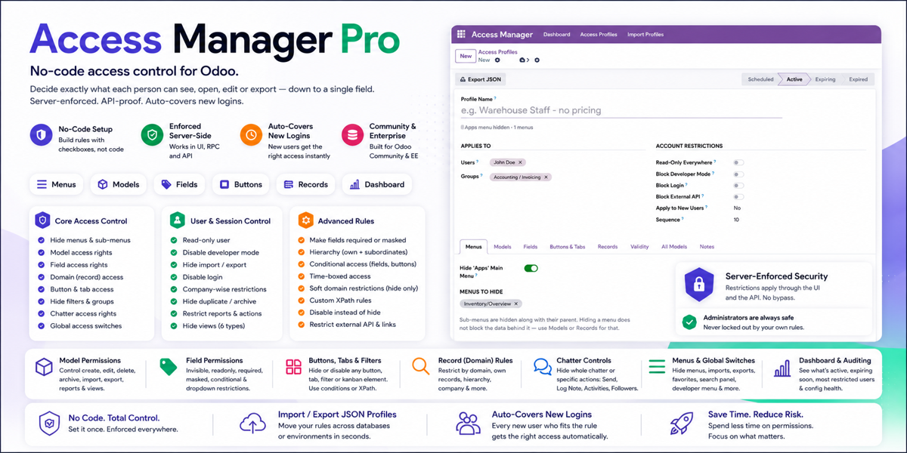
      </div>
    </div>
  </div>
</div>

<!-- ======================= FEATURE OVERVIEW ======================== -->
<div class="amp-section">
  <div class="amp-inner">
    <p class="amp-eyebrow">Everything you can restrict</p>
    <h2 class="amp-h2">One app, every layer of the interface</h2>
    <p class="amp-lead">
      Menus, models, fields, buttons, tabs, records, chatter and whole
      sessions — configured from a single screen, no development required.
    </p>

    <div class="amp-pill-group">
      <h3>Core access control</h3>
      <div class="amp-pill-grid">
        <div class="amp-pill"><span class="amp-ico">☰</span>Hide menus &amp; sub-menus</div>
        <div class="amp-pill"><span class="amp-ico">📦</span>Model access rights</div>
        <div class="amp-pill"><span class="amp-ico">🏷️</span>Field access rights</div>
        <div class="amp-pill"><span class="amp-ico">🔍</span>Domain access rights</div>
        <div class="amp-pill"><span class="amp-ico">⬜</span>Button &amp; tab access</div>
        <div class="amp-pill"><span class="amp-ico">🔧</span>Hide filters &amp; groups</div>
        <div class="amp-pill"><span class="amp-ico">💬</span>Chatter access rights</div>
        <div class="amp-pill"><span class="amp-ico">🌐</span>Global access switches</div>
      </div>
    </div>

    <div class="amp-pill-group">
      <h3>User &amp; session control</h3>
      <div class="amp-pill-grid">
        <div class="amp-pill"><span class="amp-ico">👁️</span>Read-only user</div>
        <div class="amp-pill"><span class="amp-ico">🛠️</span>Disable developer mode</div>
        <div class="amp-pill"><span class="amp-ico">📥</span>Hide import / export</div>
        <div class="amp-pill"><span class="amp-ico">🚫</span>Disable login</div>
        <div class="amp-pill"><span class="amp-ico">🏢</span>Company-wise restrictions</div>
        <div class="amp-pill"><span class="amp-ico">📋</span>Hide duplicate / archive</div>
        <div class="amp-pill"><span class="amp-ico">📊</span>Restrict reports &amp; actions</div>
        <div class="amp-pill"><span class="amp-ico">🗂️</span>Hide views (6 types)</div>
      </div>
    </div>

    <div class="amp-pill-group">
      <h3>Advanced field &amp; element rules</h3>
      <div class="amp-pill-grid">
        <div class="amp-pill"><span class="amp-ico">✳️</span>Make any field required</div>
        <div class="amp-pill"><span class="amp-ico">📝</span>Hide chatter notes / activities</div>
        <div class="amp-pill"><span class="amp-ico">🔗</span>Restrict external links</div>
        <div class="amp-pill"><span class="amp-ico">🗃️</span>Restrict kanban fields</div>
        <div class="amp-pill"><span class="amp-ico">📤</span>Restrict exporting fields</div>
        <div class="amp-pill"><span class="amp-ico">🌳</span>Hierarchy access</div>
        <div class="amp-pill"><span class="amp-ico">➕</span>Restrict create / create &amp; edit</div>
        <div class="amp-pill"><span class="amp-ico">⚡</span>Field conditional access</div>
        <div class="amp-pill"><span class="amp-ico">🛡️</span>Soft domain restriction</div>
        <div class="amp-pill"><span class="amp-ico">🔎</span>Hide search panel button</div>
        <div class="amp-pill"><span class="amp-ico">🎯</span>Button/tab conditional</div>
        <div class="amp-pill"><span class="amp-ico">🔒</span>Disable (not just hide)</div>
      </div>
    </div>
  </div>
</div>

<!-- ==================== FEATURE DEEP-DIVES ==================== -->

<!-- Model Permissions (upgraded: annotation/checkmark style, screenshot allowance kept) -->
<div class="amp-feat" style="background:#fbfaff">
  <div class="amp-inner amp-feat-grid">
    <div class="amp-feat-media">
      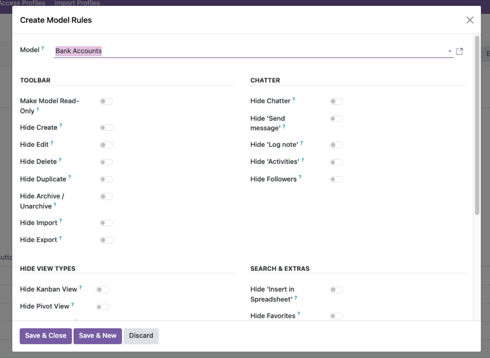
      <p class="amp-feat-caption">One line per model. Every switch is enforced on the server, so a hidden Delete button also means a refused delete request.</p>
    </div>
    <div class="amp-feat-list">
      <span class="amp-page-tag">Feature</span>
      <h2>Model Permissions</h2>
      <p>Nine switches. One model at a time.</p>
      <div class="amp-check-grid">
        <span class="amp-check"><span class="amp-tick">✓</span>Create</span>
        <span class="amp-check"><span class="amp-tick">✓</span>Edit</span>
        <span class="amp-check"><span class="amp-tick">✓</span>Delete</span>
        <span class="amp-check"><span class="amp-tick">✓</span>Duplicate</span>
        <span class="amp-check"><span class="amp-tick">✓</span>Archive</span>
        <span class="amp-check"><span class="amp-tick">✓</span>Import</span>
        <span class="amp-check"><span class="amp-tick">✓</span>Export</span>
        <span class="amp-check"><span class="amp-tick">✓</span>Reports</span>
        <span class="amp-check"><span class="amp-tick">✓</span>Views</span>
      </div>
    </div>
  </div>
</div>

<!-- Field Permissions (upgraded: annotation style, screenshot allowance kept) -->
<div class="amp-feat">
  <div class="amp-inner amp-feat-grid amp-reverse">
    <div class="amp-feat-media">
      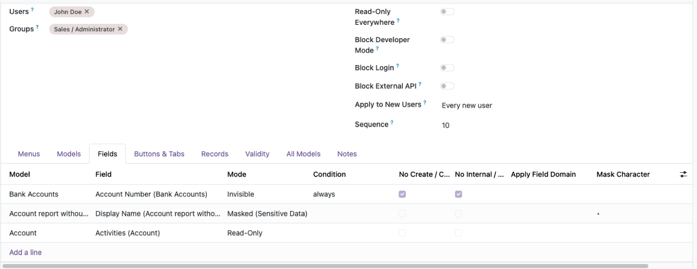
      <p class="amp-feat-caption">An invisible field disappears from the form, list columns, search, group-by, kanban — and server-side export.</p>
    </div>
    <div class="amp-feat-list">
      <span class="amp-page-tag">Feature</span>
      <h2>Field Permissions</h2>
      <p>Point at one field. Decide everything about it.</p>
      <div class="amp-annot-list">
        <div class="amp-annot"><span class="amp-annot-rule"></span><span class="amp-annot-arrow">→</span><span class="amp-annot-label">Invisible</span></div>
        <div class="amp-annot"><span class="amp-annot-rule"></span><span class="amp-annot-arrow">→</span><span class="amp-annot-label">Read Only</span></div>
        <div class="amp-annot"><span class="amp-annot-rule"></span><span class="amp-annot-arrow">→</span><span class="amp-annot-label">Required</span></div>
        <div class="amp-annot"><span class="amp-annot-rule"></span><span class="amp-annot-arrow">→</span><span class="amp-annot-label">Masked</span></div>
        <div class="amp-annot"><span class="amp-annot-rule"></span><span class="amp-annot-arrow">→</span><span class="amp-annot-label">Conditional</span></div>
        <div class="amp-annot"><span class="amp-annot-rule"></span><span class="amp-annot-arrow">→</span><span class="amp-annot-label">Dropdown Restrictions</span></div>
      </div>
    </div>
  </div>
</div>

<!-- Button / Tab / View Elements -->
<div class="amp-feat" style="background:#fbfaff">
  <div class="amp-inner amp-feat-grid">
    <div class="amp-feat-media">
      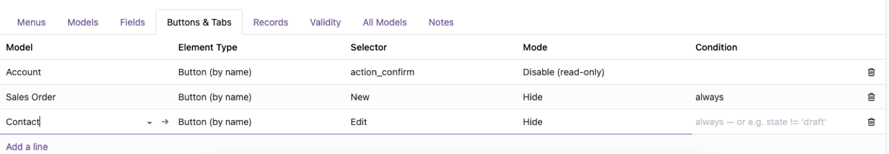
      <p class="amp-feat-caption">Hide an element outright, or leave it visible but inert — useful whenever disappearing entirely would be confusing.</p>
    </div>
    <div class="amp-feat-list">
      <span class="amp-page-tag">Feature</span>
      <h2>Buttons, Tabs &amp; Filters</h2>
      <p>Keep a form clean and a search bar honest by removing exactly the
        controls a person shouldn't use — nothing more.</p>
      <div class="amp-cap-box">
        <div class="amp-cap"><span class="amp-tick">✓</span>Hide a specific button, anywhere it appears</div>
        <div class="amp-cap"><span class="amp-tick">✓</span>Hide a notebook tab</div>
        <div class="amp-cap"><span class="amp-tick">✓</span>Hide a search filter or group-by option</div>
        <div class="amp-cap"><span class="amp-tick">✓</span>Hide a kanban card element</div>
        <div class="amp-cap"><span class="amp-tick">✓</span>Disable instead of hide, when that reads better</div>
        <div class="amp-cap"><span class="amp-tick">✓</span>Apply only when a condition on the record is true</div>
        <div class="amp-cap"><span class="amp-tick">✓</span>Custom XPath for anything the presets don't name</div>
      </div>
    </div>
  </div>
</div>

<!-- Domain / Record Access -->
<div class="amp-feat">
  <div class="amp-inner amp-feat-grid amp-reverse">
    <div class="amp-feat-media">
      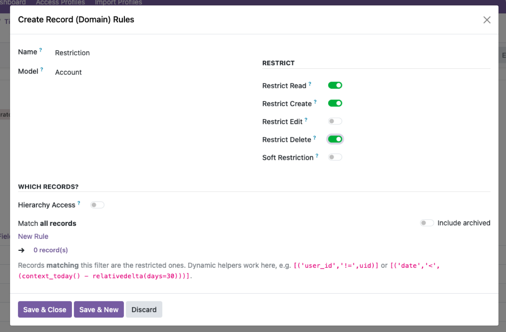
      <p class="amp-feat-caption">"Own + subordinates" reads the real manager chain from Employees — nobody has to be re-taught who reports to whom.</p>
    </div>
    <div class="amp-feat-list">
      <span class="amp-page-tag">Feature</span>
      <h2>Record (Domain) Access Rights</h2>
      <p>Control which records a person can see and touch at all — only
        their own orders, only their team's, only this company's — and
        whether that's a hard rule or a soft filter.</p>
      <div class="amp-cap-box">
        <div class="amp-cap"><span class="amp-tick">✓</span>Restrict read, create, edit and delete independently</div>
        <div class="amp-cap"><span class="amp-tick">✓</span>Any condition — date ranges, statuses, ownership</div>
        <div class="amp-cap"><span class="amp-tick">✓</span>"Own records" or "own + subordinates" hierarchy access</div>
        <div class="amp-cap"><span class="amp-tick">✓</span>Soft mode — hide only, never block a save</div>
        <div class="amp-cap"><span class="amp-tick">✓</span>Holds in pivot and graph totals, not just lists</div>
      </div>
    </div>
  </div>
</div>

<!-- Chatter -->
<div class="amp-feat" style="background:#fbfaff">
  <div class="amp-inner amp-feat-grid">
    <div class="amp-feat-media">
      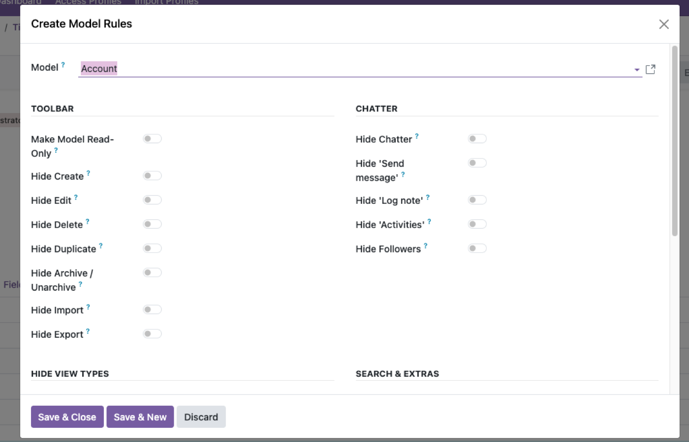
      <p class="amp-feat-caption">Turn off just Send Message and the block holds server-side too — a restricted user can't email a customer through the API either.</p>
    </div>
    <div class="amp-feat-list">
      <span class="amp-page-tag">Feature</span>
      <h2>Chatter Access Rights</h2>
      <p>The messages, notes, activities and followers panel is often the
        easiest way to leak information sideways. Control it precisely, per
        model or everywhere at once.</p>
      <div class="amp-cap-box">
        <div class="amp-cap"><span class="amp-tick">✓</span>Hide the whole chatter panel</div>
        <div class="amp-cap"><span class="amp-tick">✓</span>Hide just Send Message</div>
        <div class="amp-cap"><span class="amp-tick">✓</span>Hide just Log Note</div>
        <div class="amp-cap"><span class="amp-tick">✓</span>Hide just Activities</div>
        <div class="amp-cap"><span class="amp-tick">✓</span>Hide the Followers list</div>
        <div class="amp-cap"><span class="amp-tick">✓</span>Set per model, or once for every model</div>
      </div>
    </div>
  </div>
</div>

<!-- Menus & database-wide switches -->
<div class="amp-feat">
  <div class="amp-inner amp-feat-grid amp-reverse">
    <div class="amp-feat-media">
      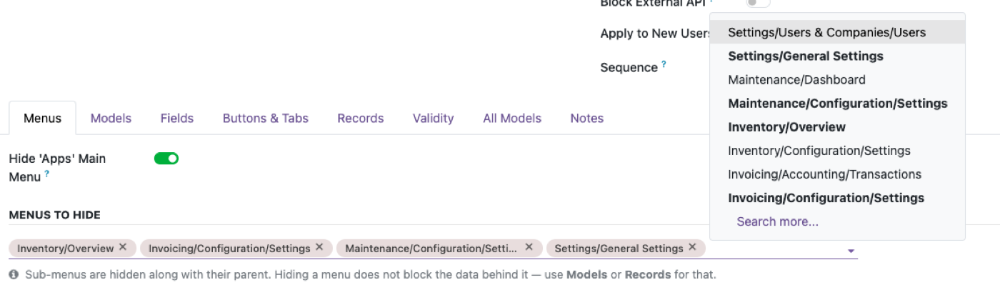
      <p class="amp-feat-caption">Hiding a menu hides every sub-menu underneath it too — no need to repeat the rule for each one.</p>
    </div>
    <div class="amp-feat-list">
      <span class="amp-page-tag">Feature</span>
      <h2>Menus &amp; Database-Wide Switches</h2>
      <p>Simplify the whole interface for people who only need a slice of
        it, and turn off a handful of features everywhere at once.</p>
      <div class="amp-cap-box">
        <div class="amp-cap"><span class="amp-tick">✓</span>Hide any menu — and everything under it</div>
        <div class="amp-cap"><span class="amp-tick">✓</span>Hide the Apps / Settings developer menu</div>
        <div class="amp-cap"><span class="amp-tick">✓</span>Hide Import everywhere</div>
        <div class="amp-cap"><span class="amp-tick">✓</span>Hide Export everywhere — blocked server-side too</div>
        <div class="amp-cap"><span class="amp-tick">✓</span>Hide the search panel's filter sidebar</div>
        <div class="amp-cap"><span class="amp-tick">✓</span>Hide Favorites and "Insert in Spreadsheet"</div>
        <div class="amp-cap"><span class="amp-tick">✓</span>Hide "Add a Property"</div>
      </div>
    </div>
  </div>
</div>

<!-- User & session -->
<div class="amp-feat" style="background:#fbfaff">
  <div class="amp-inner amp-feat-grid">
    <div class="amp-feat-media">
      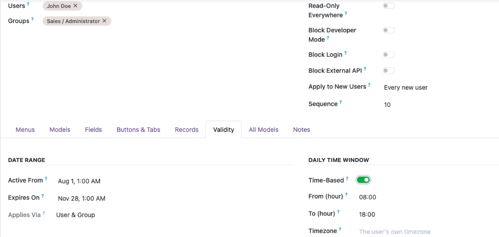
      <p class="amp-feat-caption">Administrators of this app are never affected by their own rules — there's no way to accidentally lock yourself out.</p>
    </div>
    <div class="amp-feat-list">
      <span class="amp-page-tag">Feature</span>
      <h2>User &amp; Session Controls</h2>
      <p>A handful of switches that apply to the person, not to any one
        model — including some that reach outside the browser entirely.</p>
      <div class="amp-cap-box">
        <div class="amp-cap"><span class="amp-tick">✓</span>Make a user fully read-only</div>
        <div class="amp-cap"><span class="amp-tick">✓</span>Force developer mode off</div>
        <div class="amp-cap"><span class="amp-tick">✓</span>Disable login entirely</div>
        <div class="amp-cap"><span class="amp-tick">✓</span>Block the external API — XML-RPC, JSON-RPC and API keys</div>
        <div class="amp-cap"><span class="amp-tick">✓</span>Restrict to one or more companies</div>
        <div class="amp-cap"><span class="amp-tick">✓</span>Apply only during a daily time window</div>
        <div class="amp-cap"><span class="amp-tick">✓</span>Start on a date, expire on another — auto-revoked</div>
      </div>
    </div>
  </div>
</div>

<!-- ======================== DIFFERENTIATORS ========================= -->
<div class="amp-section">
  <div class="amp-inner amp-diff-band">
    <p class="amp-eyebrow">Beyond hide &amp; read-only</p>
    <h2 class="amp-h2">A few things you won't find in a typical access-rights app</h2>
    <p class="amp-lead">These aren't checkbox features — each one solves a problem the basic hide/lock toggle can't.</p>
    <div class="amp-diff-grid">
      <div class="amp-diff-card">
        <span class="amp-ico">••••</span>
        <h4>Data masking</h4>
        <p>Show <code>••••••1234</code> instead of the real value, with the last few characters left visible if you choose.</p>
      </div>
      <div class="amp-diff-card">
        <span class="amp-ico">⏰</span>
        <h4>Time-boxed access</h4>
        <p>A rule that starts on a date, expires on another, and can even apply only between two hours each day.</p>
      </div>
      <div class="amp-diff-card">
        <span class="amp-ico">🔌</span>
        <h4>Block the external API</h4>
        <p>Stop a restricted user from reaching Odoo through a script or integration, not just the web interface.</p>
      </div>
      <div class="amp-diff-card">
        <span class="amp-ico">📐</span>
        <h4>Custom XPath rules</h4>
        <p>An escape hatch for the one view element none of the presets can name.</p>
      </div>
      <div class="amp-diff-card">
        <span class="amp-ico">📦</span>
        <h4>JSON Profile Export/Import</h4>
        <p>Export your rules as a JSON file and import them into another database — a new environment starts covered.</p>
      </div>
      <div class="amp-diff-card">
        <span class="amp-ico">👤</span>
        <h4>Auto-Enroll New Users</h4>
        <p>A new joiner can be covered by the right restrictions from their very first login, automatically.</p>
      </div>
      <div class="amp-diff-card">
        <span class="amp-ico">🛡️</span>
        <h4>Anti-Lockout by Design</h4>
        <p>Administrators of this app are structurally exempt from every rule it creates.</p>
      </div>
      <div class="amp-diff-card">
        <span class="amp-ico">📈</span>
        <h4>Live Access Dashboard</h4>
        <p>See what's active, what's expiring and who is most restricted, at a glance.</p>
      </div>
    </div>
  </div>
</div>

<!-- ============================ PAGE TOUR =========================== -->
<div class="amp-section" style="padding-bottom:8px">
  <div class="amp-inner">
    <p class="amp-eyebrow">Inside the app</p>
    <h2 class="amp-h2">A quick tour</h2>
    <p class="amp-lead">Four screens cover the whole app: build a profile, browse what exists, import a bundle, and watch it all from one dashboard.</p>
  </div>
</div>

<!-- Access Profiles list -->
<div class="amp-feat" style="border-top:none">
  <div class="amp-inner amp-feat-grid">
    <div class="amp-feat-media">
      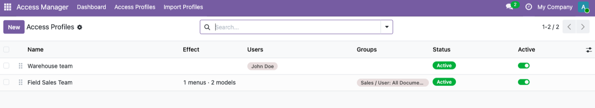
    </div>
    <div class="amp-feat-list">
      <span class="amp-page-tag">Page</span>
      <h2>Access Profiles</h2>
      <p>Every rule you've created, in one list — who it targets, how it
        reaches them (by user, by group, or both), and whether it's
        currently active, scheduled or about to expire. Filter and group by
        any of that to find a rule in seconds.</p>
    </div>
  </div>
</div>

<!-- Build an Access Profile (upgraded: annotation style, screenshot allowance kept) -->
<div class="amp-feat" style="background:#fbfaff">
  <div class="amp-inner amp-feat-grid amp-reverse">
    <div class="amp-feat-media">
      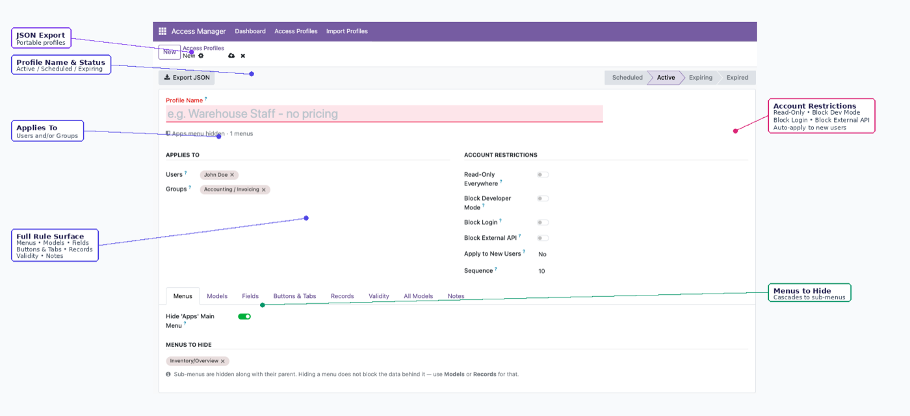
    </div>
    <div class="amp-feat-list">
      <span class="amp-page-tag">Page</span>
      <h2>Build an Access Profile</h2>
      <p>One screen. Every rule starts here.</p>
      <div class="amp-annot-list">
        <div class="amp-annot"><span class="amp-annot-rule"></span><span class="amp-annot-arrow">→</span><span class="amp-annot-label">Assign Users &amp; Groups</span></div>
        <div class="amp-annot"><span class="amp-annot-rule"></span><span class="amp-annot-arrow">→</span><span class="amp-annot-label">Server-Side Restrictions</span></div>
        <div class="amp-annot"><span class="amp-annot-rule"></span><span class="amp-annot-arrow">→</span><span class="amp-annot-label">Models • Fields • Records</span></div>
        <div class="amp-annot"><span class="amp-annot-rule"></span><span class="amp-annot-arrow">→</span><span class="amp-annot-label">Buttons &amp; Tabs</span></div>
        <div class="amp-annot"><span class="amp-annot-rule"></span><span class="amp-annot-arrow">→</span><span class="amp-annot-label">Time-Based Rules</span></div>
      </div>
    </div>
  </div>
</div>

<!-- Quick actions -->
<div class="amp-feat">
  <div class="amp-inner amp-feat-grid">
    <div class="amp-feat-media">
      
    </div>
    <div class="amp-feat-list">
      <span class="amp-page-tag">Page</span>
      <h2>Quick Actions</h2>
      <p>One-click filters for the questions you actually ask day to day —
        no need to build a search every time.</p>
      <div class="amp-cap-box">
        <div class="amp-cap"><span class="amp-tick">✓</span>All Rules</div>
        <div class="amp-cap"><span class="amp-tick">✓</span>Expiring Soon / Cleanup Expired</div>
        <div class="amp-cap"><span class="amp-tick">✓</span>Inactive Rules</div>
        <div class="amp-cap"><span class="amp-tick">✓</span>User Rules / Group Rules</div>
        <div class="amp-cap"><span class="amp-tick">✓</span>Time-Based Rules</div>
      </div>
    </div>
  </div>
</div>

<!-- Import -->
<div class="amp-feat" style="background:#fbfaff">
  <div class="amp-inner amp-feat-grid amp-reverse">
    <div class="amp-feat-media">
      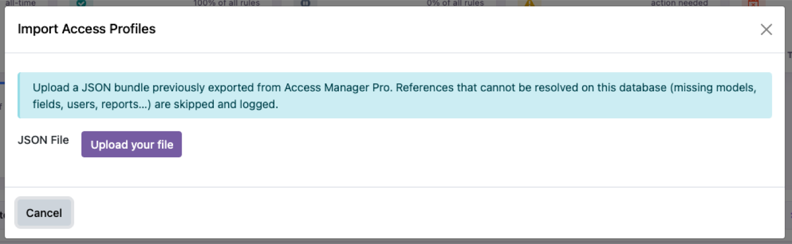
    </div>
    <div class="amp-feat-list">
      <span class="amp-page-tag">Page</span>
      <h2>Import Profiles</h2>
      <p>Bring in a JSON bundle of profiles exported from another database —
        moving from staging to production, or between Odoo versions. Users,
        groups, models and fields are matched by name, and anything that
        can't be resolved is skipped and reported rather than guessed at.</p>
    </div>
  </div>
</div>

<!-- Dashboard - real screenshot, last -->
<div class="amp-feat">
  <div class="amp-inner amp-feat-grid">
    <div class="amp-feat-media">
      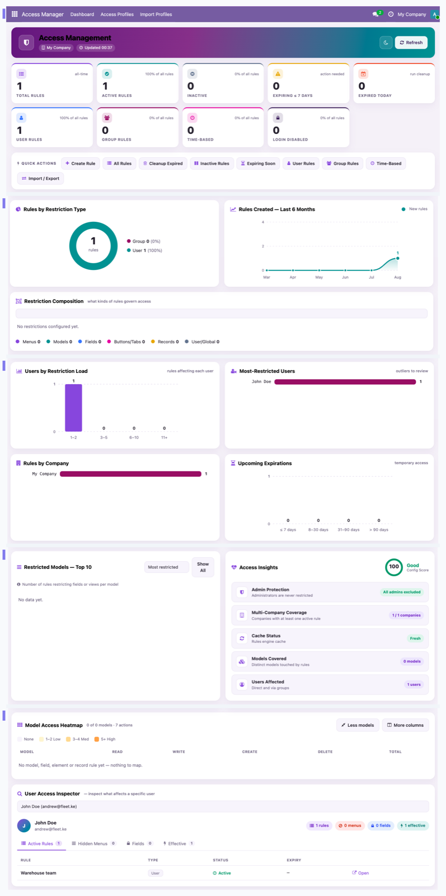
    </div>
    <div class="amp-feat-list">
      <span class="amp-page-tag">Page</span>
      <h2>The Dashboard</h2>
      <p>Everything above, summarised in one place: how many rules exist,
        which ones expire this week, which users carry the most
        restrictions, and a config-health score that flags the things worth
        a second look — like whether every administrator is genuinely
        exempt. A built-in inspector lets you pick any one user and see
        exactly what applies to them right now.</p>
    </div>
  </div>
</div>

<!-- ============================= BENEFITS =========================== -->
<div class="amp-section">
  <div class="amp-inner">
    <p class="amp-eyebrow">Why teams install it</p>
    <h2 class="amp-h2">Give people exactly enough access — no more</h2>
    <div class="amp-benefit-grid">
      <div class="amp-benefit-col">
        <div class="amp-benefit"><span class="amp-tick">✓</span>Restrict Create, Edit, Delete, Archive and more on any model</div>
        <div class="amp-benefit"><span class="amp-tick">✓</span>Hide menus, buttons, tabs and fields by user or by group</div>
        <div class="amp-benefit"><span class="amp-tick">✓</span>Limit which records someone can see or touch, with a real condition</div>
        <div class="amp-benefit"><span class="amp-tick">✓</span>Make a user read-only or turn off developer mode in one click</div>
      </div>
      <div class="amp-benefit-col">
        <div class="amp-benefit"><span class="amp-tick">✓</span>Control chatter, per model or across the whole database</div>
        <div class="amp-benefit"><span class="amp-tick">✓</span>Enforced on the server — not a UI trick a script can route around</div>
        <div class="amp-benefit"><span class="amp-tick">✓</span>A visual interface built for admins, not developers</div>
        <div class="amp-benefit"><span class="amp-tick">✓</span>Works on Odoo Community and Enterprise alike</div>
      </div>
    </div>
  </div>
</div>

<!-- ============================== REVIEWS ============================= -->
<div class="amp-section" style="padding-top:8px">
  <div class="amp-inner">
    <p class="amp-eyebrow">What customers say</p>
    <h2 class="amp-h2">Reviews from our customers</h2>
    <div class="amp-review-grid" style="margin-top:26px">
      <div class="amp-review-card">
        <div class="amp-stars">★★★★★</div>
        <h4>Finally clear access control</h4>
        <p class="amp-review-quote">We manage multiple companies and needed precise field-level and menu restrictions. Access Manager Pro made it straightforward. The time-boxed access gives us real peace of mind.</p>
        <div class="amp-review-who"><span class="amp-review-org">HyperBrain</span><span class="amp-review-sector">Odoo Partner</span></div>
      </div>
      <div class="amp-review-card">
        <div class="amp-stars">★★★★★</div>
        <h4>Powerful yet easy to configure</h4>
        <p class="amp-review-quote">The profile system is excellent. We assign complex rules to groups in minutes. Data masking and the live dashboard are features we didn't find elsewhere.</p>
        <div class="amp-review-who"><span class="amp-review-org">Inkomoko</span><span class="amp-review-sector">Impact Investing</span></div>
      </div>
      <div class="amp-review-card">
        <div class="amp-stars">★★★★★</div>
        <h4>Great for multi-country teams</h4>
        <p class="amp-review-quote">Running operations across regions, blocking external API access and auto-enrolling new users saved us significant admin time. Very solid module.</p>
        <div class="amp-review-who"><span class="amp-review-org">CSL Logistics</span><span class="amp-review-sector">Global Logistics</span></div>
      </div>
      <div class="amp-review-card">
        <div class="amp-stars">★★★★★</div>
        <h4>Solid and production-ready</h4>
        <p class="amp-review-quote">We needed server-enforced restrictions, not just UI hiding. Hierarchy access and JSON profile export made rollout across instances much easier.</p>
        <div class="amp-review-who"><span class="amp-review-org">TechnoServe</span><span class="amp-review-sector">Non-profit</span></div>
      </div>
      <div class="amp-review-card">
        <div class="amp-stars">★★★★★</div>
        <h4>Exactly what we needed</h4>
        <p class="amp-review-quote">Clean interface and complete feature set. We especially like the ability to disable buttons instead of only hiding them, and the validity dates.</p>
        <div class="amp-review-who"><span class="amp-review-org">Baki</span><span class="amp-review-sector">Business Solutions</span></div>
      </div>
      <div class="amp-review-card">
        <div class="amp-stars">★★★★★</div>
        <h4>Highly recommended</h4>
        <p class="amp-review-quote">We use it daily to keep pricing and cost fields protected. Setup was fast and the profiles are easy to maintain as the team grows.</p>
        <div class="amp-review-who"><span class="amp-review-org">Highland Bottlers</span><span class="amp-review-sector">Manufacturing</span></div>
      </div>
    </div>
  </div>
</div>

<!-- ============================ SUPPORT / CTA ======================== -->
<div class="amp-section">
  <div class="amp-inner amp-cta">
    <h2>Ready to take control of access in Odoo?</h2>
    <p>Install Access Manager Pro and configure your first profile in minutes.</p>
    <div class="amp-btn-row">
      <a class="amp-btn-primary" href="mailto:support@odin.ist">Request a Demo</a>
      <a class="amp-btn-ghost" href="mailto:support@odin.ist">Contact Support</a>
    </div>
    <p class="amp-email">support@odin.ist &nbsp;·&nbsp; andrew@fleet.ke</p>
  </div>
</div>

<!-- Duplicate-seller notice -->
<div class="amp-section" style="padding-top:0">
  <div class="amp-inner amp-warn">
    <strong>Beware of duplicate listings and unofficial sellers.</strong><br/>
    Download Access Manager Pro only from this official listing on the Odoo
    Apps Store to be sure you're getting genuine updates and support.
  </div>
</div>

<!-- Testing notice -->
<div class="amp-section" style="padding-top:0">
  <div class="amp-inner amp-notice">
    Always try new rules on a staging database before applying them in
    production, and take a backup before a large-scale change. After
    installing or upgrading, update the Apps list from Settings if the new
    version doesn't appear right away.
  </div>
</div>

</div>
</section>
